Quite simply, computer hardware is the physical components that a computer system requires to function. It encompasses everything with a circuit board that operates within a PC or laptop; including the motherboard, graphics card, CPU (Central Processing Unit), ventilation fans, webcam, power supply, and so on.
Although the design of hardware differs between desktop PCs and laptops due to their differences in size, the same core components will be found in both. Without hardware, there would be no way of running the essential software that makes computers so useful. Software is defined as the virtual programs that run on your computer; that is, operating system, internet browser, word-processing documents, etc.
Hardware Components of Desktop & Laptop
- A motherboard
- A Central Processing Unit (CPU)
- A Graphics Processing Unit (GPU), also known as a video card
- Random Access Memory (RAM), also known as volatile memory
- Storage: Solid State Drive (SSD) or Hard Disk Drive (HDD)

Motherboard
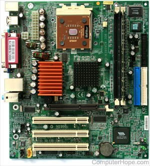
The motherboard is the backbone that ties the computer's components together at one spot and allows them to talk to each other. Without it, none of the computer pieces, such as the CPU, GPU, or hard drive, could interact. Total motherboard functionality is necessary for a computer to work well.
All components of a computer communicate through a circuit board called the motherboard, as was mentioned above, it can be assumed as the glue that holds everything together and This is where input/output devices such as a keyboard, mouse, and speakers get plugged in.
CPU : Central Processing Unit
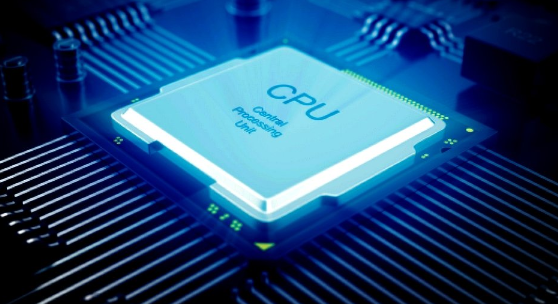
Central processing unit (CPU), principal part of any digital computer system, generally composed of the main memory, control unit, and arithmetic-logic unit.
Whenever you write a line of code (in Python, Java, C++, or any other programming language), it's broken down into assembly language—which is a language that the processor can understand. It fetches, decodes, and executes these instructions.
GPU : Graphics Processing Unit
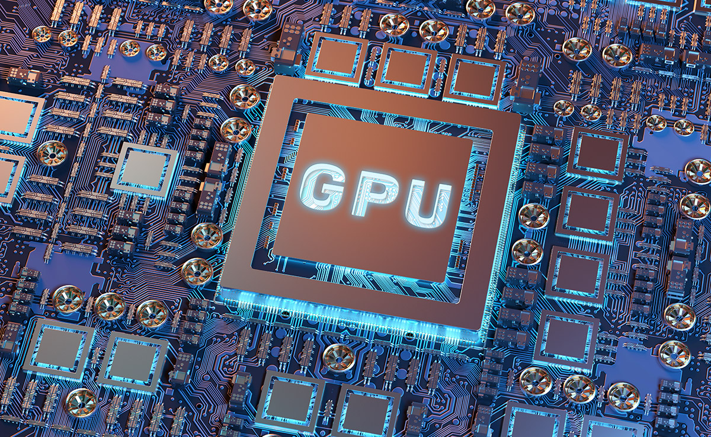
Graphics processing unit, a specialized processor originally designed to accelerate graphics rendering. GPUs can process many pieces of data simultaneously, making them useful for machine learning, video editing, and gaming applications.
In addition to video games, though, good graphics cards also come in handy for those who rely on images in order to execute their craft, like 3D modelers using resource-intensive software.
RAM : Random Access Memory

RAM (Random Access Memory) is the hardware in a computing device where the operating system (OS), application programs and data in current use are kept so they can be quickly reached by the device's processor. RAM is the main memory in a computer. It is much faster to read from and write to than other kinds of storage, such as a hard disk drive (HDD), solid-state drive (SSD) or optical drive.
Random Access Memory is volatile. That means data is retained in RAM as long as the computer is on, but it is lost when the computer is turned off. When the computer is rebooted, the OS and other files are reloaded into RAM, usually from an HDD or SSD If RAM fills up, the computer's processor must repeatedly go to the hard disk to overlay the old data in RAM with new data. This process slows the computer's operation.
Storage : HDD & SSD
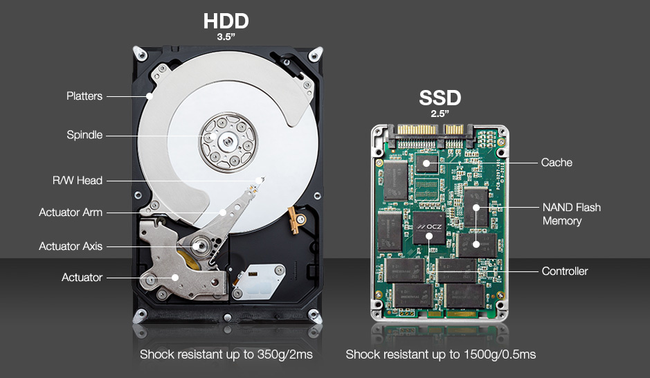
A computer hard disk drive (HDD) is a non-volatile data storage device. Non-volatile refers to storage devices that maintain stored data when turned off. All computers need a storage device, and HDDs are just one example of a type of storage device.
A solid-state drive (SSD) is a new generation of storage device used in computers. SSDs use flash-based memory, which is much faster than a traditional mechanical hard disk. Upgrading to an SSD is one of the best ways to speed up your computer.
SSDs are faster, more durable, more compact, quieter, and consume less energy. HDDs are more affordable and may offer easier data recovery in the event of damage. As long as price isn't the determining factor, SSDs come out on top — especially since modern SSDs are just about as reliable as HDDs.
Hardware Components of Tablet
- A processor, generally underclocked to limit heat output.
- Memory chips.
- A storage chip and possibly a slot for additional storage.
- A battery.
- A graphics processor.
- a sound processor and speakers.
sensors such as accelerometers, a compass and light sensors.
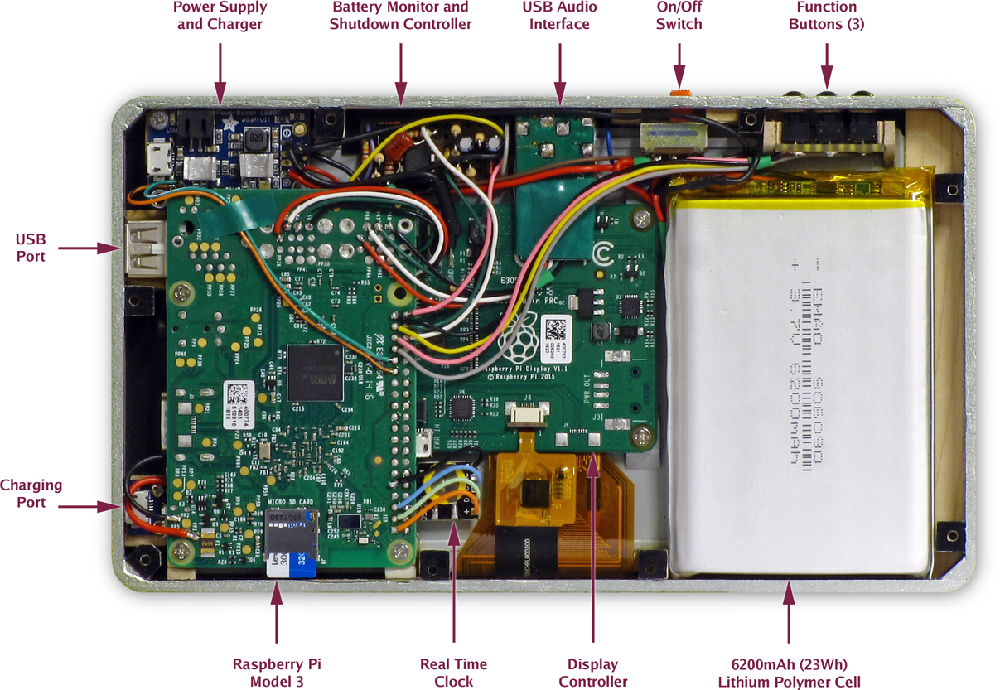
Touchscreen
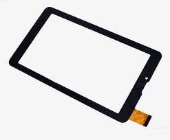
Tablet PCs are sleek, lightweight and affordable, so they must pack a bundle of features into a sleek package. This starts with the touch-sensitive screen. A tablet's screen has to serve as the monitor, keyboard, and touch pad to save physical space. The screens are capable of high-resolution color photos and HD-quality video matching that of notebook computers. Some tablet users opt to purchase a separate USB or Bluetooth keyboard for more extensive writing tasks.
Processor
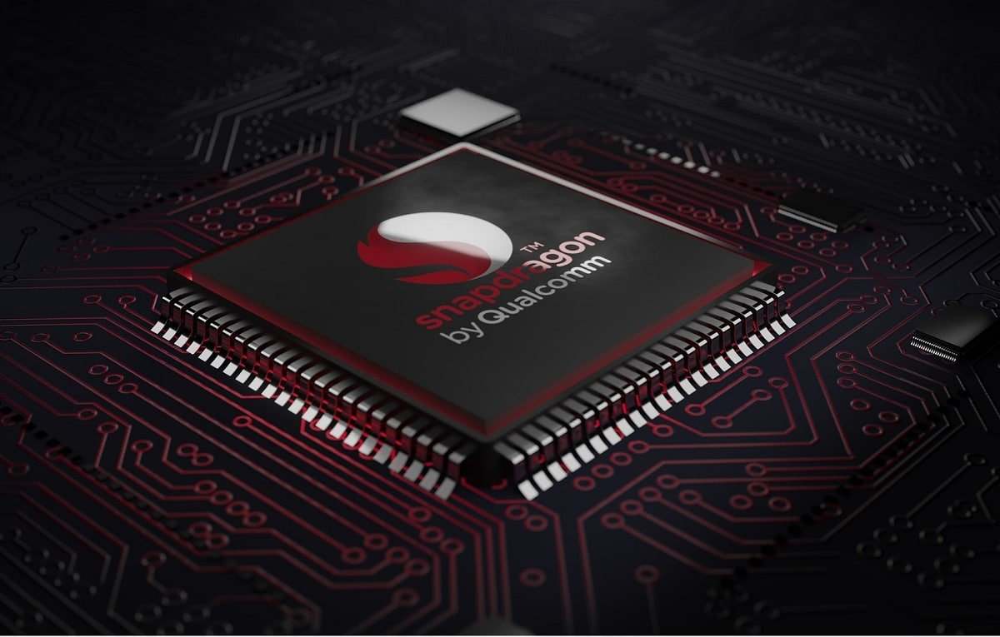
Tablet PCs must use a low-power, yet high-octane microprocessor, also known as the Central Processing Unit (CPU). Two popular tablet PCs, the Motorola Xoom and the View sonic G-Tablet, use the Nvidia Tegra 2 processor. A low-power processor allows the tablets to achieve the 8- to 10-hour battery life that the units can achieve at the sacrifice of processing speed. If you want the more powerful Intel Pentium processor or a top-of-the-line AMD chip, you might consider getting a full-scale laptop or maybe even a desktop PC.
Memory
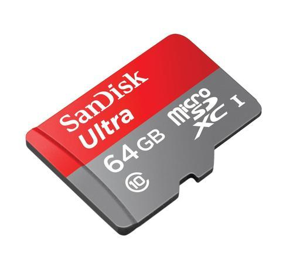
Tablet PCs typically pack 1 to 2 gigabytes (GB) of RAM, or Random Access Memory. This is plenty of RAM for basic tasks required of tablets, such as note taking, email reading and video viewing. The RAM helps the tablets load and swap out programs and files. Some tablets PCs are capable of RAM upgrades to 4 GB. This would benefit users who want to do moderate video editing on their tablets.
Storage Capacity
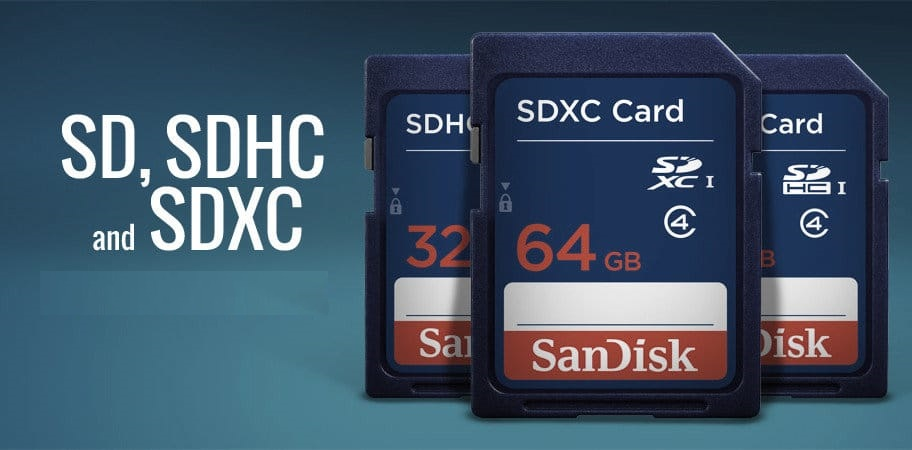
Tablet PCs typically work online in the manner of a net book or networked computer. Therefore, hard drive space is held to a minimum if the unit has a native physical drive at all. Typically, tablet PCs come with 16 GB or 32 GB of internal flash memory. Storage can be upgraded with a Secure Digital High Capacity (SDHC) flash memory card of 4 GB, 8 GB, 16 GB, 32 GB or 64 GB.
Integrated Motherboard
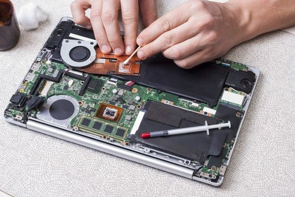
Many of the tablet PCs functions are handled by an integrated motherboard that includes a graphics card, wireless network card, card reader, USB ports and mini HDMI port. Many of the files and programs, if not downloaded from the Internet, are loaded via a USB cable or from a flash drive. Usually, tablets do not have any DVD drives.
Solid State Drives (SSD)
Tablet computers usually use solid-state drives, which allow the computer to boot up and open programs more quickly. They are also more durable than hard disk drives.
Software
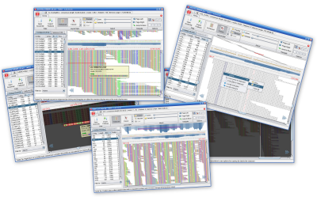
The software that runs on a laptop or tablet can be vastly different in terms of capabilities. Now if the tablet PC is running Windows 7 such as the HP Slate or ASUS Eee Slate it can theoretically run the same software as a laptop but will likely be slower. This can make it easy to use it as a primary laptop using the same software used in a work environment. The two other major tablet platforms right now are Android and iOS. Both of these require applications specific to their operating systems. There are several programs available for each of these and many more are being developed. The problem is the lack of the input devices and hardware performance limitations mean that some more advanced features supplied by corresponding laptop class programs may have to be dropped in order to fit into the tablet environment.